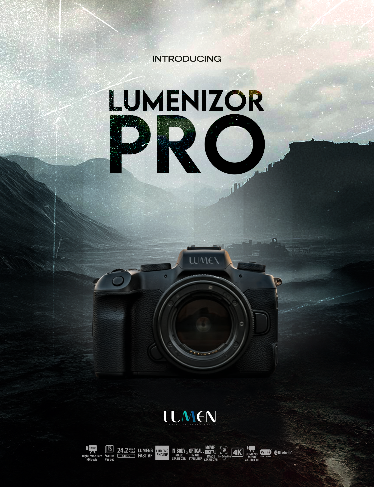

001
Lumenizor Pro
Product-poster concept combining a dramatic landscape, camera photography, distressed texture and oversized typography.
PhotoshopPosterCompositing
Selected visual work, with room for the portfolio to keep evolving as new projects arrive.

Upload the newest designs and they can be turned into full project cards and case studies here.